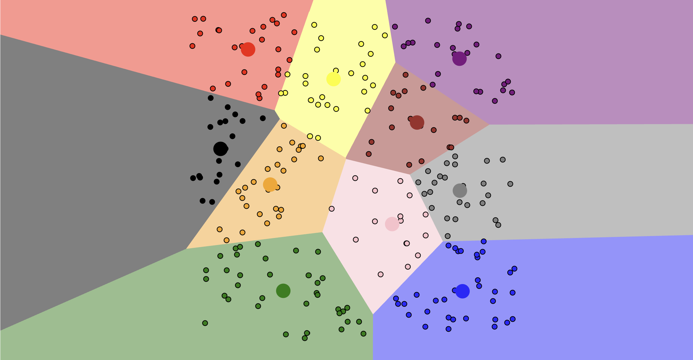

The Activity
Unit 5 · Posted 29 October 2026 · Tutor: Dr Elizabeth Oladapo · Evidences learning outcomes 1 and 2
Activity guidance: watch two clustering animations and relate each to the logic of the k-means algorithm, starting the second with ‘I’ll Choose’ followed by ‘Uniform Points’; share thoughts on both in the module wiki and comment on peers’ posts.
Findings
| Activity | What I did | Result |
|---|---|---|
| Animation 1 (Shabalin, no date) | All four centres started at the leftmost points | One group split and two merged: a local optimum, a stable answer that is not the best one (Géron, 2025). |
| Animation 2 (Harris, 2014) | Ten centres bunched in the middle of evenly spread points | K-means still produced ten tidy regions; restarts cannot fix this. |
| Python check (250 points, 3 samples) | SSE and silhouette for k = 1 to 8, on even points and on four simulated groups | Even points: silhouette 0.36 to 0.42 for every k. Four groups: 0.76 to 0.78 at k = 4. |

K-means almost always returns the number of groups it is asked for, so a tidy result is not proof that the groups exist. The elbow plot alone was not enough: the even data seemed to bend at four, while the silhouette stayed near 0.4. If an insurer made one offer per cluster, near-identical customers on either side of an invented boundary could get different deals (University of Essex Online, 2026).
Evidence
I ran the notebook in Google Colab before writing the post. Its first code cell records the run:
Run by Anne Dayer on 27 October 2026 16:07 CET with scikit-learn 1.6.1AI Acknowledgement
Codex was used to assist in identifying appropriate code solutions and to proofread and refine the code I produced. Claude and Grammarly supported proofreading, language refinement, and formatting of my written text. All final decisions, analyses, interpretations, conclusions, and recommendations are my own.
References
Géron, A. (2025) Hands-On Machine Learning with Scikit-Learn and PyTorch. Santa Rosa: O’Reilly.
Harris, N. (2014) ‘Visualizing k-means clustering’, Naftali Harris [Blog], 19 January. Available at: https://www.naftaliharris.com/blog/visualizing-k-means-clustering/ (Accessed: 27 October 2026).
Shabalin, A.A. (no date) K-means clustering, starting with 4 left-most points [Animation]. Available at: https://shabal.in/visuals/kmeans/2.html (Accessed: 27 October 2026).
University of Essex Online (2026) ‘Unit 5 Lecturecast: Clustering’ [Lecturecast]. ML_PCOM7E: Machine Learning October 2026. University of Essex Online. Available at: https://www.my-course.co.uk/mod/scorm/view.php?id=1434575 (Accessed: 25 October 2026).